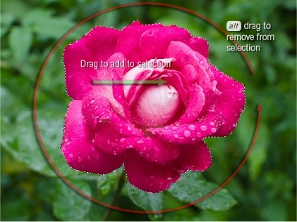

-
Move Tool
The move tool moves an entire layer at a time. When you have selected this tool, click on a layer in the layer pane, and then click and drag on the image. The current layer will move all at once. You can even move it outside of the current image size. Don't worry, though, parts of an image that move outside the borders still exist - they are just hidden. They will only be cropped out if you flatten the image.
Category: Selection Tools -
Marquee Selection Tools

The following tools allow you to select regions in your image to alter, copy, move, and apply filters.
Category: Selection Tools -
Lasso tools

The lasso Selection Tools are similar to the marquee tools, except that the lasso tools give you ultimate freedom in terms of the shape of your selection. There are three different lasso tools:
A note about lasso tool options: When extracting part of an image from its background, the result will be choppy and rough around the edges unless you adjust the feather value in the options bar. This fades the edges you create and can smooth the region into its new background.
Category: Selection Tools -
Magic Wand Tool
The magic wand tool is similar to the magnetic polygon lasso tool except that rather than dragging to make a selection, you click in a region and a selection appears around similar colored pixels. You can control how similar pixels must be to be included in the selection by altering the tolerance value. This tool is useful for selecting monochromatic regions or pieces of high-contrast images.
Category: Selection Tools -
Quick Selection Tools
The quick Selection Tools is like the magic wand tool, it can be used to make selections based on pixel color values, except the quick Selection Tools is a little more sophisticated than the standard magic wand and hence, has been made the new default tool in this particular tool grouping.
 Category: Selection Tools